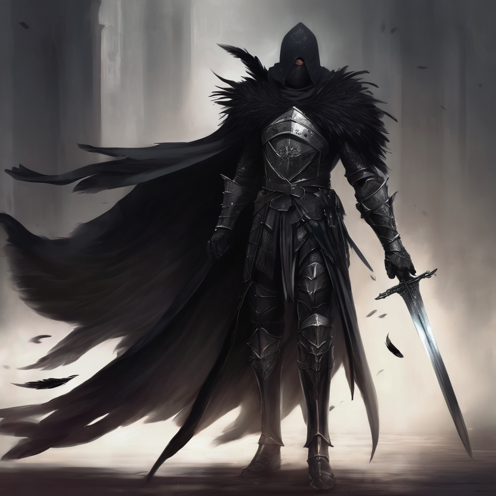
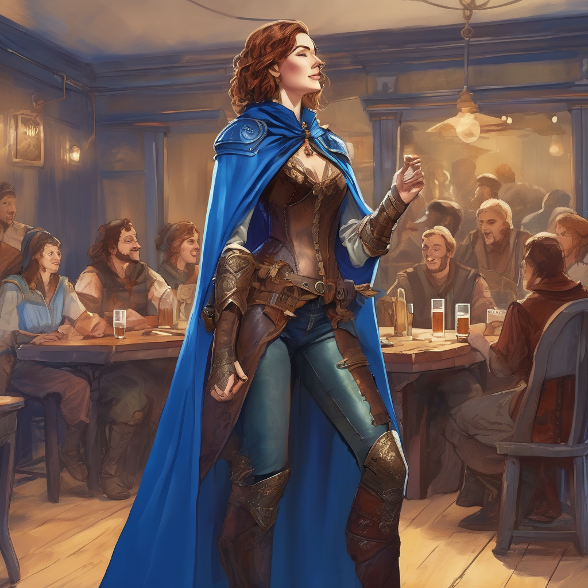
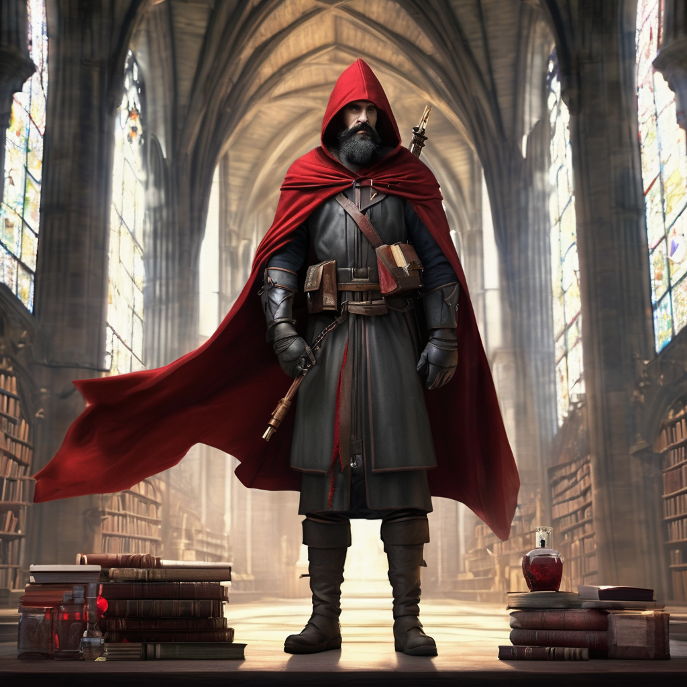

Nestled in the heart of a forgotten forest, the cult's fortress was a monolith of stone and shadow, a testament to a bygone era's architecture and its maker's malevolent intent. Its walls, thick and impenetrable, rose high above the canopy, cloaked in a perpetual mist that blurred its edges and concealed its true size. The fortress was designed to be a labyrinth, its interior a maze of corridors and chambers that twisted and turned in on themselves, ensuring that those who entered without permission lost their way, or worse, their minds. The only light within came from flickering torches that cast more shadows than they dispelled, creating an ambiance of unease and secrecy. Around it, the forest was silent, as if even the wildlife feared to draw too close to its cursed grounds. This fortress was not just a stronghold but a symbol of the cult's power and isolation, a place where darkness was not just found but cultivated.
Under the veil of a night without stars, within the oppressive confines of the cult's fortress, a warrior's heart beat a silent drum of defiance. Raven Black, his name a whisper of the shadow and mystery that cloaked his past, was a figure carved from the darkness itself. Eyes sharp as a raven's gaze, hair dark as the bird's sleek feathers, he was a presence both formidable and enigmatic. Once revered within the cult's ranks, his discovery of their true malevolence had turned him into a prisoner, bound by chains both physical and ethereal.

Yet, freedom's call was answered in the form of Jay Blue, a bard whose fame reached the heavens. With every note she played and every word she sang, she wove a tapestry of hope and courage. Dressed in hues that mirrored the sky at dawn, she was a beacon of light in the pervasive darkness. Her music, a blend of magic and melody, carried the power to heal the soul, inspiring those who heard her to believe in a tomorrow filled with promise.

Beside her stood Pecker Wood, a cleric whose faith was as solid as the oak. In simple robes that spoke of his humble nature, he was the embodiment of healing and divine grace. His hands, though gentle, were powerful conduits of faith's will, mending wounds and soothing pain with an ease that belied the depth of his spiritual connection. His wisdom, profound as the ancient forests, guided not just his companions but all those who sought his counsel.

Together, they orchestrated Raven's escape, a symphony of stealth, magic, and divine intervention that pierced the night. Jay's melodies distracted and enchanted, her songs a cover for their silent footsteps, while Pecker's prayers shielded them from prying eyes, his faith a protective mantle around them. Raven, with sword in hand, was the silent promise of protection, his every movement a dance of shadows and light.
As they vanished into the obscurity of the night, leaving the cult's stronghold behind, they stepped into a world that held both danger and hope. Bound by their shared ordeal, they were more than companions; they were a beacon for the lost and a shield against the darkness. Their journey was one of redemption, of battles fought not just against the evils of the world but against the shadows within.
This daring escape marked the beginning of their quest, a tale that would become legend, sung by bards and whispered in the halls of the faithful for generations to come. For in a world where darkness often reigned, the light they carried was a beacon of hope, a reminder that even in the deepest night, dawn was always within reach.